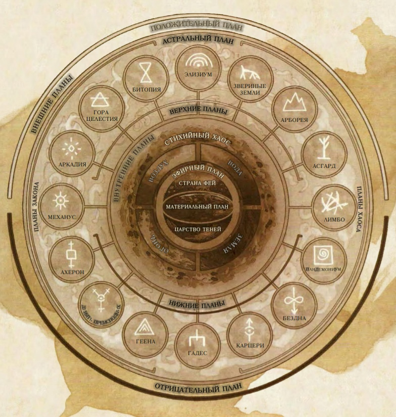

Общая вселенная Днд
Планы существования
Вселенная игры Dangeous & Dragonss невероятно обширна, и она ломится от множества миров, а также миллиардов альтернативных измерений, называемых планами существования. Они охватывают все миры, в которых Мастера проводят свои приключения, и все находятся в пределах относительно обычного Материального Плана. За этим планом находятся куски сырой стихийной материи и энергии, царства чистой мысли и идеи, дома демонов и ангелов, а также домены богов. Многие заклинания и магические предметы могут вытягивать энергию из этих планов, призывая обитающих там существ, позволяя общаться с их обитателями, и даже разрешая искателям приключений отправляться туда. Когда персонажи накопят силу, получив высокие уровни, вы можете отправиться спасать друга из ужасных глубин Бездны, или сами окажетесь с кружкой в руке рядом с дружелюбными великанами Асгарда. Вы сможете прогуляться по улице из чистого пламени или оказаться на поле боя, где мертвецы каждое утро воскресают.
Материальный план
Материальный План это ядро, в котором философские и стихийные силы, формирующие другие планы, слились, образовав смертных и материю. Все миры D&D существуют в Материальном Плане, и именно он становится стартовой точкой большинства кампаний и приключений. Вся остальная часть мультивселенной описывается по отношению к Материальному Плану. Миры Материального Плана бесконечно разнообразны, так как являются отражениями творческого воображения Мастеров, проводящих в них игры, а также игроков, чьи герои ищут там приключения. Туда входят и планеты, превращённые магией в пустыни, и усеянные островками водные миры, и миры, где магия переплетена с продвинутыми технологиями, и миры, оставшиеся в каменном веке, и миры, где боги свободно ходят, оставив свои дворцы. Более всего известны миры, опубликованные за долгие годы в качестве официальных миров для игр D&D — Серый Ястреб, Чёрное Болото, Сага о Копье, Забытые Королевства, Мистара, Birthright, Тёмное Солнце и Эберрон, а также другие. Во всех этих мирах множество героических искателей приключений и коварных злодеев, древние руины и забытые артефакты, свои подземелья и свои драконы. Однако даже если ваша кампания проходит в одном из этих миров, он принадлежит вашему Мастеру — можете считать его одним из тысяч параллельных миров, который может разительно отличаться от опубликованной версии.

Эфирный План и Астральный План называются Переходными Планами. Это практически лишённые отличительных черт миры, служащие в основном лишь для перехода с одного плана на другой. Такие заклинания как эфирность и проекция в астрал позволяют персонажам входить в эти планы и переходить с них на другие планы. Эфирный План это затянутое туманами измерение, которое иногда описывают как великий океан. Его берега, называемые Пограничным Эфиром, пересекаются с Материальным Планом и Внутренними Планами, так что у всех мест этих планов есть общая граница с Эфирным Планом. Зрение некоторых существ может простираться на Пограничный Эфир, а заклинания видение невидимого и истинное зрение предоставляют на время такую способность. Некоторые магические эффекты тоже простираются с Материального Плана на Пограничный Эфир, в частности, эффекты, использующие силовое поле, такие как узилище и силовая стена. Глубины этого плана, Глубинный Эфир — регион крутящихся разноцветных туманов. Астральный План это царство мыслей и грёз, в котором посетители в виде бестелесных душ переходят в планы богов и демонов. Это огромное серебристое море, одинаковое и сверху и снизу, с белыми и серыми лоскутами, кружащимися среди сгустков света, напоминающими далёкие звёзды. Непостоянные цветные вихри крутятся в воздухе подобно вращающимся монетам. Здесь можно найти участки твёрдой материи, но большая часть Астрального Плана представляет собой открытое пространство. Эфирный План и Астральный План называются Переходными Планами. Это практически лишённые отличительных черт миры, служащие в основном лишь для перехода с одного плана на другой. Такие заклинания как эфирность и проекция в астрал позволяют персонажам входить в эти планы и переходить с них на другие планы. Эфирный План это затянутое туманами измерение, которое иногда описывают как великий океан. Его берега, называемые Пограничным Эфиром, пересекаются с Материальным Планом и Внутренними Планами, так что у всех мест этих планов есть общая граница с Эфирным Планом. Зрение некоторых существ может простираться на Пограничный Эфир, а заклинания видение невидимого и истинное зрение предоставляют на время такую способность. Некоторые магические эффекты тоже простираются с Материального Плана на Пограничный Эфир, в частности, эффекты, использующие силовое поле, такие как узилище и силовая стена. Глубины этого плана, Глубинный Эфир — регион крутящихся разноцветных туманов. Астральный План это царство мыслей и грёз, в котором посетители в виде бестелесных душ переходят в планы богов и демонов. Это огромное серебристое море, одинаковое и сверху и снизу, с белыми и серыми лоскутами, кружащимися среди сгустков света, напоминающими далёкие звёзды. Непостоянные цветные вихри крутятся в воздухе подобно вращающимся монетам. Здесь можно найти участки твёрдой материи, но большая часть Астрального Плана представляет собой открытое пространство.
Внутренние Планы окружают и охватывают Материальный План и его отражения, предоставляя сырое стихийное вещество, из которого и состоят все миры. Четыре Стихийных Плана — Вода, Воздух, Земля и Огонь — формируют кольцо вокруг Материального Плана, находясь при этом в кипящем Стихийном Хаосе.
Если Внутренние Планы это сырая материя и энергия, из которой состоит мультивселенная, то Внешние Планы это направления, мысли и стремления. Именно поэтому многие мудрецы называют Внешние Планы божественными или духовными, так как больше всего Внешние Планы известны тем, что там живут боги. При обсуждении всего, что касается божеств, язык становится метафоричным. Их настоящие дома это не конкретные места, но воплощение идеи того, что Внешние Планы это царства мысли и духа. Так же как в случае со Стихийными Планами, можно представить воспринимаемую часть Внешних Планов как пограничный регион, а удалённые духовные области будут лежать за пределами восприятия.
